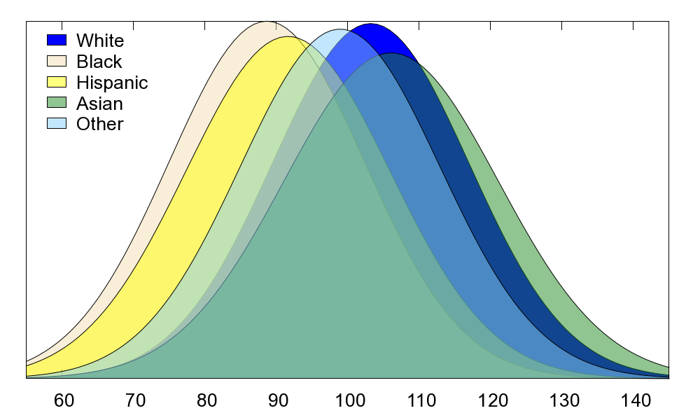

import pandas as pd
import re
import numpy as np
import matplotlib.pyplot as plt
from IPython.display import displayHow Does an Individual’s Race/Culture Affect Their Personality?

There are many people who believe that an individual’s personality such as their extroversion, intellect and conscientiousness etc, are traits that they are born with. There are many other’s who argue that they are qualities shaped by the environment in which the individual grew up in. One angle in which we can approach this question is by asking whether the culture and environment in which the individual grew up in shapes their personality.
Setup
Loading the Data
big5_df = pd.read_csv('data/openpsych_data.csv', sep='\t')
big5_df.head()| race | age | engnat | gender | hand | source | country | E1 | E2 | E3 | ... | O1 | O2 | O3 | O4 | O5 | O6 | O7 | O8 | O9 | O10 | |
|---|---|---|---|---|---|---|---|---|---|---|---|---|---|---|---|---|---|---|---|---|---|
| 0 | 3 | 53 | 1 | 1 | 1 | 1 | US | 4 | 2 | 5 | ... | 4 | 1 | 3 | 1 | 5 | 1 | 4 | 2 | 5 | 5 |
| 1 | 13 | 46 | 1 | 2 | 1 | 1 | US | 2 | 2 | 3 | ... | 3 | 3 | 3 | 3 | 2 | 3 | 3 | 1 | 3 | 2 |
| 2 | 1 | 14 | 2 | 2 | 1 | 1 | PK | 5 | 1 | 1 | ... | 4 | 5 | 5 | 1 | 5 | 1 | 5 | 5 | 5 | 5 |
| 3 | 3 | 19 | 2 | 2 | 1 | 1 | RO | 2 | 5 | 2 | ... | 4 | 3 | 5 | 2 | 4 | 2 | 5 | 2 | 5 | 5 |
| 4 | 11 | 25 | 2 | 2 | 1 | 2 | US | 3 | 1 | 3 | ... | 3 | 1 | 1 | 1 | 3 | 1 | 3 | 1 | 5 | 3 |
5 rows × 57 columns
Exploring the Personality Test
The test which we will be using to determine an individual’s personality is called the Big 5 Personality Test. It measures 5 aspects of the individual’s personality, namely extroversion, emotional stability, agreeableness, conscientiousness and intellect/imagination. These sections are defined as such.
Extroversion: A person’s tendency to be energised by social interaction, preferring to be more outgoing and assertive rather than solitude and reflection.
Emotional Stability: An individual’s ability to remain calm, balanced and resilient under stress where someone with higher emotional stability would be able to manage negative emotions better.
Agreeableness: How an individual balances their needs against others. Individuals with higher agreeableness are more cooperative, empathetic and trusting, sometimes putting others needs before their own while individuals with lower scores are more skeptical, cynical and direct.
Conscientiousness: An individual’s ability for self discipline, orginisation, achievement striving and responsibility. An individual who has a higher conscientiousness score would be able to better control their impulses.
Intelligence/Imagination: Measures an individuals ability to engage in fantasy, aesthetic appreciation and creative, non-conventional thinking.
Scoring the Data
To compare personality traits across countries or even just between people, it is necessary to score the data. The big 5 personality test is constructed off 5 factors, namely extroversion, emotional stability, agreeableness, conscientiousness and intellect/imagination. In the test, questions are presented to the user with some contributing positively towards the score and others reducing the overall score. For each of the 5 sections, the maxmium amount of points attainable for each section is: - Extroversion: 20 - Emotional Stability: 2 - Agreeableness: 26 - Conscientiousness: 26 - Intellect/Imagination: 32
extroversion_vec = [1,-1,1,-1,1,-1,1,-1,1,-1]
emotional_vec = [-1,1,-1,1,-1,-1,-1,-1,-1,-1]
agreeableness_vec = [-1,1,-1,1,-1,1,-1,1,1,1]
conscientiousness_vec = [1,-1,1,-1,1,-1,1,-1,1,1]
intellect_imagination_vec = [1,-1,1,-1,1,-1,1,1,1,1]
big5_df["Extroversion"] = (big5_df[[f"E{i}" for i in range(1,11)]]
.values @ extroversion_vec)
big5_df["Emotional_Stability"] = (big5_df[[f"N{i}" for i in range(1,11)]]
.values @ emotional_vec)
big5_df["Agreeableness"] = (big5_df[[f"A{i}" for i in range(1,11)]]
.values @ agreeableness_vec)
big5_df["Conscientiousness"] = (big5_df[[f"C{i}" for i in range(1,11)]]
.values @ conscientiousness_vec)
big5_df["Intellect_Imagination"] = (big5_df[[f"O{i}" for i in range(1,11)]]
.values @ intellect_imagination_vec)subset_df = big5_df.iloc[:, list(range(0, 6)) + list(range(57, 62))]
subset_df.head(5) | race | age | engnat | gender | hand | source | Extroversion | Emotional_Stability | Agreeableness | Conscientiousness | Intellect_Imagination | |
|---|---|---|---|---|---|---|---|---|---|---|---|
| 0 | 3 | 53 | 1 | 1 | 1 | 1 | 14 | 1 | 22 | 23 | 25 |
| 1 | 13 | 46 | 1 | 2 | 1 | 1 | -8 | -19 | 11 | 18 | 8 |
| 2 | 1 | 14 | 2 | 2 | 1 | 1 | 5 | -34 | 14 | 25 | 27 |
| 3 | 3 | 19 | 2 | 2 | 1 | 1 | -8 | -31 | 13 | 2 | 23 |
| 4 | 11 | 25 | 2 | 2 | 1 | 2 | 4 | -18 | 20 | 10 | 16 |
Grouping Scores by Region
The dataset in which we are utilising has already asked users to input their race as one of 14 categories. - 0: Missed - 1: Mixed Race - 2: Arctic (Siberian, Eskimo) - 3: Caucasian (European) - 4: Caucasian (Indian) - 5: Caucasian (Middle East) - 6: Caucasian (North African, Other) - 7: Indigenous Australian - 8: Native American - 9: North East Asian (Mongol, Tibetan, Korean Japanese, etc) - 10: Pacific (Polynesian, Micronesian, etc) - 11: South East Asian (Chinese, Thai, Malay, Filipino, etc) - 12: West African, Bushmen, Ethiopian - 13: Other
race_avg_scores = (
big5_df
.groupby("race")[[
"Extroversion",
"Emotional_Stability",
"Agreeableness",
"Conscientiousness",
"Intellect_Imagination"
]]
.mean()
.reset_index()
)
race_avg_scores.head(20)| race | Extroversion | Emotional_Stability | Agreeableness | Conscientiousness | Intellect_Imagination | |
|---|---|---|---|---|---|---|
| 0 | 0 | 0.274510 | -19.143791 | 15.588235 | 10.640523 | 19.967320 |
| 1 | 1 | 0.037657 | -18.895397 | 14.028591 | 9.013947 | 21.595537 |
| 2 | 2 | 5.214286 | -15.214286 | 12.857143 | 8.000000 | 22.285714 |
| 3 | 3 | 0.153839 | -18.705229 | 14.537629 | 9.283572 | 22.280820 |
| 4 | 4 | 0.191041 | -20.119236 | 14.497365 | 9.240448 | 19.123847 |
| 5 | 5 | 0.825243 | -19.763107 | 14.438835 | 9.768932 | 19.998058 |
| 6 | 6 | 0.146096 | -18.725441 | 14.445844 | 9.335013 | 20.579345 |
| 7 | 7 | 1.458333 | -18.208333 | 11.083333 | 6.333333 | 21.000000 |
| 8 | 8 | 0.223881 | -17.696517 | 14.248756 | 10.746269 | 19.004975 |
| 9 | 9 | -0.425532 | -20.074468 | 12.893617 | 8.627660 | 19.398936 |
| 10 | 10 | 0.676923 | -17.292308 | 14.215385 | 8.969231 | 19.876923 |
| 11 | 11 | -1.339602 | -19.972058 | 13.510478 | 9.607200 | 19.024718 |
| 12 | 12 | 0.891892 | -16.123552 | 15.594595 | 10.687259 | 21.231660 |
| 13 | 13 | 0.739914 | -18.938112 | 14.936937 | 10.333725 | 19.209949 |
Extroversion by Race
From the table presented above, we can observe that asians hold the lowest extroversion scores on average with North East Asians having a score of -0.43 and south east asians having a score of -1.34, the only race to have a negative extroversion score on average. Meanwhile, the race with the highest extroversion score on average are the Arctic people. This is not necessarily surprising as Asian culture places emphasis on following rules and not standing out which is why it can be observed that many asians will mind their own business and develop a more introverted personality.
Emotional Stability
In terms of emotional stability, the results are pretty equal across all races. In particular, only the Arctic people and the West Africans, Bushman and Ethiopians stand out with the highest emotional stability scores. It has been speculated that this could be due to the higher levels of communal bonds and religious faith. In particular, all of these cultures have a heavy emphasis on community in particular which could strengthen an individual’s emotional stability throughout their growth.
Agreeableness
There is more variability in the scores observed for agreeableness. The most agreeable race are the Wes Africans, Bushman and Ethiopians. Once again, this is likely tied to their sense of community developed from birth, influencing them to be more cooperative and trusting of each other. Meanwhile, the lowest agreebleness score is given to Indigenous Australians who had their land taken over by British colonists a couple centuries ago. While over time, they have been given apologies, land and certain special rights from the Australian government, that culture and past probably affected their culture, especially still living in a land that was taken from them. That could possibly explain their low agreeableness score, stemming from an antagonistic view towards the people they are living with.
Conscientiousness
In terms of conscientiounsness, the results are pretty evenly spread. However, the indigenous Australians do stand out as having the lowest score of 6.33. Potential causes for this score stem from a typically lower socialeconomic standard, culture and intergenerational trauma as well as rougher living environments. However, it has also been speculated that this low score could also originate due to the test being culturally biased, and thus, not providing an accurate representation of their traditions and cultural methods in which they demonstrate conscientiousness.
Intelligence and Intellect
In analysing the scores for intelligence and intellect, it might be surprising to observe that the values are roughly the same across all races, with no outliers. This might seem very counter intuitive, especially given publically available academic research into differing IQ scores across races as shown in the distributions given below.

However, it is important to remember that this is a purely qualitative and not quantative test, measuring more so how intelligent an individual percieves themselves to be rather than how intelligent they actually are. As such, from this, we can conclude that your race doesn’t play a significant role in how intelligent or imaginative you percieve yourself to be.
Overall Conclusion
From the results shown below, there were definitely outliers in each of the categories to how different races answered questions on the Big 5 Personality test. While most of the results were evenly distributed, these results are enough to show that race and culture definitely have an impact in shaping an individual’s personality.